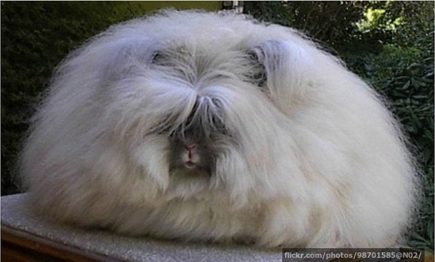
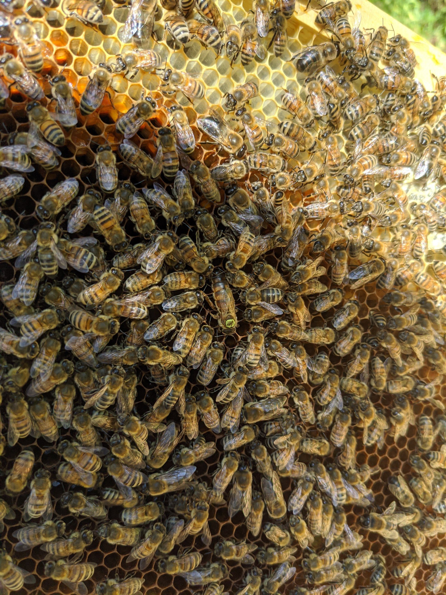

I hate bees so much.
Dr. Nicholas R. Paolucci 1,* and Dr. Nomore B. Smith2
1 The University of Akron, Department of Hating Bees, Akron, Ohio
2 BeeGone University, Department of Beeochemistry and Beeomedical Sciences, Beetown, Beelguria
*nichopaolucci@gmail.com
Background:
Over the course of the rest of my life, I intend to update this page with some of the many reasons that I hate bees.
General Overview
- Gross looking (yes, even honey bees. Fluffy !== not gross.

Image proof. That thing is fluffy. It's gross.
Image Source
- They are yellow. The color of pee. And other gross stuff like bananas and mustard and plant diseases in which the plant leaves turn yellow.
- Stingers
- Nests
- Fast and dangerous
- Vomit honey
- They love hot weather. Only insane things like hot weather.
- Here is a photo of my evil sister's evil bees.

As you can see, these bees are in a cult as they surround and worship the queen (seen in the center with the gross looking green/yellow dot on the back. Evil specimens.
I hate bees so much that I made this website.
Check out my other stuff here.